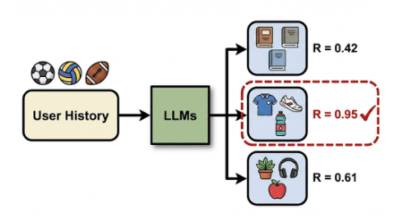
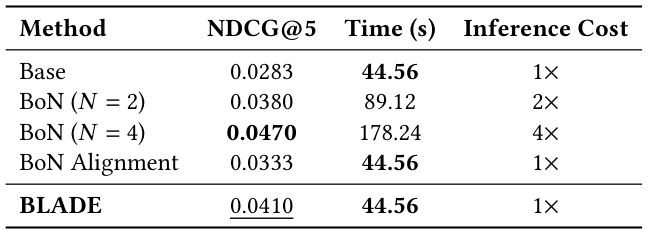
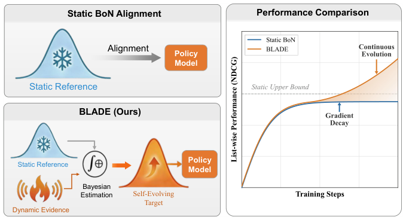
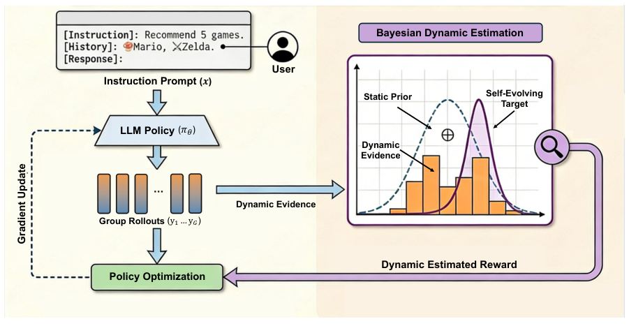
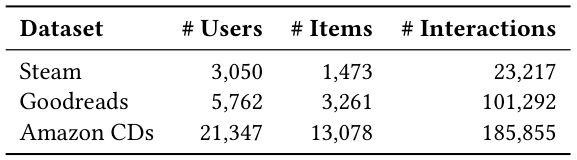
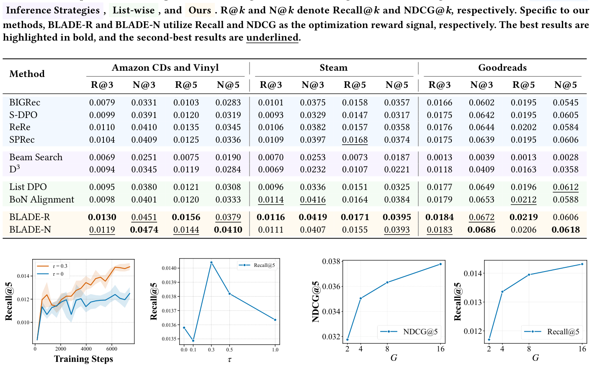
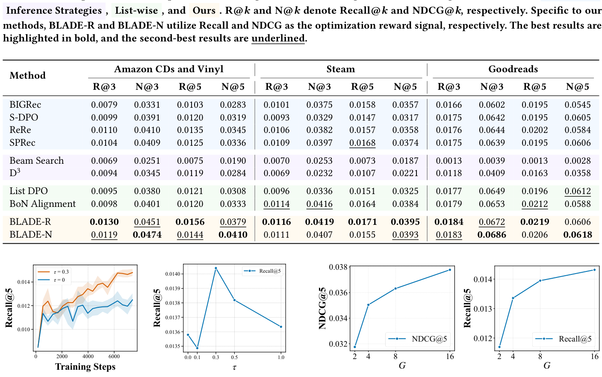
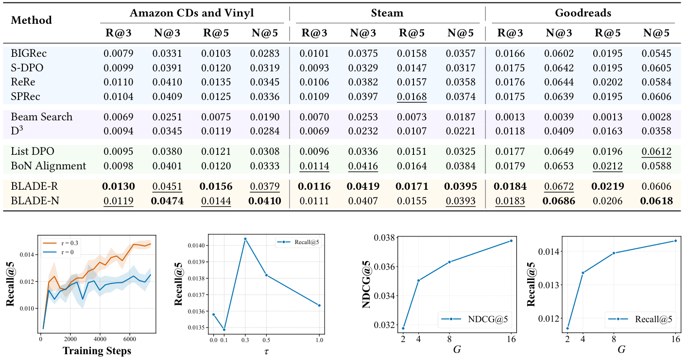

Beyond Static Best-of-N: Bayesian List-wise Alignment for LLM-based Recommendation (超越静态 Best-of-N：面向 LLM 推荐的贝叶斯列表级对齐)
- 会议/期刊: SIGIR 2026
- 推荐链路定位: 端到端生成式 (End-to-End Generative) — 生成式列表推荐 + 列表级对齐
- 研究方向: 大语言模型推荐 (LLM4Rec) / 生成式推荐与离散语义 ID
- 论文原文: https://arxiv.org/abs/2605.04559v1
- 开源代码: https://github.com/RegionCh/BLADE
TL;DR (核心速览)
针对 LLM4Rec 中 token 级目标无法优化 NDCG/公平性等列表级不可微指标、而推理期 Best-of-N (BoN) 延迟随 \(N\) 线性增长的问题，本文提出 BLADE：将 BoN 对齐目标重构为贝叶斯动态估计，融合静态参考先验与当前策略 rollout 的动态证据，构建"自演化目标"以解决静态对齐的无差别监督与梯度衰减两大瓶颈。在 Amazon CDs、Steam、Goodreads 三个真实数据集上，BLADE 在 NDCG@5 上相对最强列表级基线 BoN Alignment 提升 23.1%，且推理开销与静态对齐持平（1×）。
Background & Motivation (背景与动机)
- 领域背景与主流范式: LLM4Rec 将推荐建模为条件序列生成，主流做法是 SFT + 对齐（DPO / List-DPO / S-DPO），以 token 级似然或成对偏好为优化目标。
- 现有方法局限 (Limitations of Prior Work):
- 目标错位：token 级/成对目标与真实用户满意度所依赖的列表级指标（NDCG、公平性、多样性）存在根本性错位，而这些指标本质离散、不可微。
- 推理期 BoN 的代价：BoN 通过采样 \(N\) 个候选并选列表级奖励最优者绕过不可微问题，但推理延迟随 \(N\) 线性增长（图 1(b)、表 1：\(N=4\) 时耗时 178.24s，为基线的 4×），无法实时部署。
- BoN 对齐的静态参考缺陷：将搜索能力蒸馏进模型权重的 BoN Alignment 依赖固定参考分布，导致两个瓶颈（见下）。
- 核心挑战 (Key Challenge): 静态参考的 CDF \(F_{\text{ref}}(\cdot)\) 由固定样本集 \(\mathcal{D}_{\text{ref}}\) 经验估计，上界被 \(R_{\max}=\max_{y'\in\mathcal{D}_{\text{ref}}}R(y')\) 锁死。当策略探索出超越该上界的候选时：
- 无差别监督 (Indiscriminate Supervision)：对任意 \(R(y_1)>R(y_2)>R_{\max}\)，有 \((F_{\text{ref}}(R(y_1)))^{N-1}=(F_{\text{ref}}(R(y_2)))^{N-1}=1\)，高质量候选被赋予相同目标概率，排序区分度丧失。
- 梯度衰减 (Gradient Decay)：\(\lim_{F_{\text{ref}}\to 1}\log F_{\text{ref}}(R(y))=0\)，策略越强，有效监督信号越弱，训练过早停滞。
- 核心洞察与切入点 (Key Insight): 静态参考本质是奖励景观的先验信念，其稳定但僵化。作者将目标构建重构为实时贝叶斯推断：把当前策略 rollout 视为动态证据，与静态先验融合得到后验目标，使目标分布随模型能力自适应缩放（图 2）。
Problem Formulation & Method (问题定义与方法架构)
1. 符号定义与输入表征 (Notations & Input Representations)
- 用户集 \(\mathcal{U}\)、物品集 \(\mathcal{I}\)；对用户 \(u\in\mathcal{U}\) 由其交互历史构造自然语言 prompt \(x\)。
- LLM 作为随机策略 \(\pi_\theta\)，自回归生成响应 \(y=(y_1,\dots,y_T)\)，表示有序的 \(K\) 个推荐物品列表： $\(\pi_\theta(y|x)=\prod_{t=1}^{T}\pi_\theta(y_t|x,y_{<t})\)$
- 优化目标为不可微列表级奖励 \(R(y;u)\)（NDCG、Recall、MGU、ILD 等）。
- 关键超参：组大小 \(G=16\)、参考集大小 \(M=128\)、动态系数 \(\tau\in\{0.1,0.3,0.5,1.0\}\)、BoN 采样数 \(N\)。
2. 整体流水线 (Overall Architecture)
数据流：用户历史序列化 prompt \(x\) → LLM 策略 \(\pi_\theta\) 采样 \(G\) 条候选列表 \(\{y_i\}_{i=1}^{G}\) → 计算列表级奖励 \(R(y_i)\) → 贝叶斯动态估计融合静态先验统计 \(N^{<r}_{\text{ref}}\) 与批内动态证据 \(N^{<r}_{\text{batch}}\) 得到 \(\hat{F}_{\text{BLADE}}(r)\) → 转换为代理奖励 \(r_i=(N-1)\log\hat{F}_{\text{BLADE}}(R(y_i))\) → 代入 GRPO 计算组相对优势并更新策略。共享采样机制使同一批 rollout 同时服务于目标估计与梯度计算，实现零额外开销。
flowchart TD
A["输入层: 用户历史序列化 Prompt x"] --> B["LLM 策略 π_θ 采样 G 条候选列表"]
B --> C["列表级奖励 R(y_i) 计算 (NDCG/Recall/MGU/ILD)"]
C --> D["贝叶斯动态估计: 静态先验 N_ref + 动态证据 N_batch → F̂_BLADE"]
D --> E["代理奖励 r_i = (N-1)log F̂_BLADE"]
E --> F["GRPO 组相对优势 + 裁剪策略梯度更新"]
F --> B3. 核心模块设计与数学原理 (Key Designs & Formulations)
(1) 静态 BoN 对齐的变分下界（问题起点）
由次序统计量展开，BoN 选择分布为 \(\pi_{\text{BoN}}(y)=\sum_{k=1}^{N}\binom{N}{k}(F_{\text{ref}}(R(y)))^{N-k}\pi_{\text{ref}}(y)^k\)。直接优化需对求和取对数，故采用 vBoN 的可处理下界代理： $\(\mathcal{J}_{\text{BoN}}(\theta)=\mathbb{E}_{y\sim\pi_\theta}\Big[(N-1)\log F_{\text{ref}}(R(y))-\log\frac{\pi_\theta(y)}{\pi_{\text{ref}}(y)}\Big]\)$ 即"分位数奖励 + KL 正则"。静态实现中 \(F_{\text{ref}}\) 由固定 \(\mathcal{D}_{\text{ref}}\) 经验估计，正是两大瓶颈的根源。
(2) 贝叶斯动态估计（核心创新）
对每个奖励阈值 \(r\)，将分位数 \(\theta_r=F(r)\in[0,1]\) 建模为阈值专属 Beta 分布 \(\theta_r\sim\text{Beta}(\alpha_r,\beta_r)\)——Beta 支撑集与 CDF 值域匹配，且与"计数低于阈值样本数"的二项似然共轭，可闭式更新。
- 先验初始化：\(\alpha_r^0=N^{<r}_{\text{ref}}\)，\(\beta_r^0=M-N^{<r}_{\text{ref}}\)（静态参考统计）。
- 幂缩放似然：以动态系数 \(\tau\ge 0\) 调节批证据的有效样本量，后验为 $\(P(\theta_r|\mathcal{D}_{\text{batch}})\propto\underbrace{\theta_r^{\alpha_r^0-1}(1-\theta_r)^{\beta_r^0-1}}_{\text{静态先验}}\cdot\Big[\underbrace{\theta_r^{N^{<r}_{\text{batch}}}(1-\theta_r)^{(G-N^{<r}_{\text{batch}})}}_{\text{动态证据}}\Big]^{\tau}\)$
- 后验参数：\(\alpha_r^{\text{new}}=\alpha_r^0+\tau N^{<r}_{\text{batch}}\)，\(\beta_r^{\text{new}}=\beta_r^0+\tau(G-N^{<r}_{\text{batch}})\)。
- 点估计（BLADE 动态估计器）：取后验期望 $\(\hat{F}_{\text{BLADE}}(r)=\mathbb{E}[\theta_r|\mathcal{D}_{\text{batch}}]=\frac{N^{<r}_{\text{ref}}+\tau\cdot N^{<r}_{\text{batch}}}{M+\tau\cdot G}\)$
物理直觉：\(\tau=0\) 退化为静态估计器；\(\tau=1\) 为标准 beta-二项更新；\(0<\tau<1\) 保守压制批证据方差。由于分母随 rollout 奖励分布动态重标定，高奖励区不再饱和于 1，恢复排序区分度并防止梯度衰减。
(3) 动态奖励集成与共享采样
代理奖励 \(r_i=(N-1)\log\hat{F}_{\text{BLADE}}(R(y_i))\) 直接代入 GRPO 计算组相对优势 \(A_i=(R(y_i)-\mu_G)/\sigma_G\)。共享采样：同一批 \(\mathcal{D}_{\text{batch}}\) 既作动态证据更新后验，又用于策略梯度，故目标估计零额外开销。
4. 训练目标、负采样与推理复杂度 (Optimization, Negative Sampling & Complexity)
- 损失函数：GRPO 裁剪代理目标 $\(\mathcal{J}(\theta)=\mathbb{E}_{\pi_{\theta_{\text{old}}}}\Big[\frac{1}{G}\sum_{i=1}^{G}\frac{1}{T_i}\sum_{t=1}^{T_i}\big(\min(\rho_{i,t}A_i,\text{clip}(\rho_{i,t},1-\epsilon,1+\epsilon)A_i)-\beta\,\text{D}_{\text{KL}}(\pi_\theta\|\pi_{\text{ref}})\big)\Big]\)$ 其中 \(\rho_{i,t}=\pi_\theta(y_{i,t}|x,y_{i,<t})/\pi_{\theta_{\text{old}}}(y_{i,t}|x,y_{i,<t})\)，\(A_i\) 由动态代理奖励 \(r_i\) 计算。DPO 类基线 KL 惩罚 \(\beta=0.1\)。
- 负采样策略：免显式负采样——采用组内相对比较（GRPO 组采样 \(G=16\)），以组内候选的相对奖励归一化替代外部负例；训练采样温度 0.8、重复惩罚 1.05 以鼓励探索。
- 复杂度：BLADE 与静态 BoN Alignment 训练/推理开销相同（表 1：44.56s，1× 推理成本），远低于推理期 BoN（\(N=2\) 为 2×、\(N=4\) 为 4×）。在线推理为单次贪心解码，无需 Beam Search 或多次采样。原文未报告峰值显存数值。
Experimental Setup & Evaluation Protocol (实验设置与评估协议)
- 数据集统计与预处理（表 2）：过滤交互数 <10 的用户；Steam 与 Goodreads 保留 top 15% 最热门物品以保证交互稠密；滑动窗口取过去 10 个物品为历史、后续 10 个为目标列表。
| 数据集 (Dataset) | 用户数 (#Users) | 物品数 (#Items) | 交互数 (#Interactions) | 稀疏度/密度 (Sparsity) | 模态/辅助特征说明 |
|---|---|---|---|---|---|
| Steam | 3,050 | 1,473 | 23,217 | 密度约 0.52% | 物品标题文本 |
| Goodreads | 5,762 | 3,261 | 101,292 | 密度约 0.54% | 书籍标题/类型 |
| Amazon CDs and Vinyl | 21,347 | 13,078 | 185,855 | 密度约 0.067% | 商品标题文本 |
- 数据划分方式 (Splitting Strategy): 采用两阶段范式——基座模型在全量数据上 SFT 3 epoch 获取领域知识；对齐阶段在采样子集（4,096 训练 / 512 验证实例）上进行以平衡算力；所有结果在完整测试集上报告以保证无偏评估。原文未明确说明测试集的具体切分比例（如 LOO 或 8:1:1），存在一定协议描述模糊性。
- 排名评测协议 (Ranking Protocol): 生成式列表推荐，评测在完整测试集上进行（非采样负例排序）；所有训练类方法统一采用贪心解码评估，解码类基线（Beam Search、D3）遵循其标准协议。
- 评价指标与显著性检验: 准确率指标
Recall@k、NDCG@k（\(k\in\{3,5\}\)）；列表级指标 MGU（Mean Group Unfairness，越低越好）与 ILD（Intra-List Diversity，越高越好）。骨干为 Llama-3.2-1B-Instruct，4×A100。原文未报告多随机种子方差或配对显著性检验（如 \(p<0.05\)），此为评估严谨性短板。
Key Experimental Results (核心实验结果)
1. 主实验对比 (Main Results)
表 3 整体性能对比（节选关键指标）：
| 数据集 | 指标 | 最强 LLM 基线 (SPRec/ReRe) | 最强列表级基线 (BoN Alignment) | 本文方法 (BLADE-N) | 相对提升 (Improv.) |
|---|---|---|---|---|---|
| Amazon CDs | NDCG@5 | 0.0345 (ReRe) | 0.0333 | 0.0410 | +23.1% (vs BoN Align.) |
| Amazon CDs | NDCG@3 | 0.0410 (ReRe) | 0.0401 | 0.0474 | +18.2% (vs BoN Align.) |
| Amazon CDs | Recall@5 | 0.0135 (ReRe) | 0.0120 | 0.0156 (BLADE-R) | +15.6% (vs BoN Align.) |
| Steam | NDCG@5 | 0.0374 (SPRec) | 0.0384 | 0.0395 (BLADE-R) | +2.9% (vs BoN Align.) |
| Steam | NDCG@3 | 0.0397 (SPRec) | 0.0416 | 0.0419 (BLADE-R) | +0.7% (vs BoN Align.) |
| Goodreads | NDCG@3 | 0.0649 (List DPO) | 0.0653 | 0.0686 (BLADE-N) | +5.1% (vs BoN Align.) |
| Goodreads | Recall@5 | 0.0202 (ReRe) | 0.0212 | 0.0219 (BLADE-R) | +3.3% (vs BoN Align.) |
关键观察：BLADE 在三个数据集多数指标上取得最优；BLADE-R（以 Recall 为奖励）在 Recall 指标占优，BLADE-N（以 NDCG 为奖励）在 NDCG 指标占优，体现目标可控性。推理期策略（Beam Search、D3）表现显著落后，归因于独立采样假设导致的语义重复与同质化。
2. 消融实验与控制变量分析 (Ablation Study)
- 动态系数 \(\tau\) 消融（图 4(a)）：\(\tau=0\)（静态基线）初期提升后迅速平台化，实证验证梯度衰减假设；\(\tau=0.3\) 的 BLADE 持续稳定提升，突破静态上界。
- 先验消融（图 6）：对比 "No Prior (\(M=0\))" 与 BLADE (\(M=128\))，BLADE 始终更优；组大小 \(G\) 越小相对提升越大（\(G=2\) 时 +5.3%，\(G=16\) 时 +1.7%），说明静态先验在采样稀疏时起关键稳定作用。
- 组大小 \(G\) 影响（图 5）：\(G\) 从 2 增至 16，NDCG@5 与 Recall@5 持续提升，表明方法可随算力扩展获益。
- 原文未做严格参数量对齐或图拓扑度数匹配类消融（生成式范式下不适用）。
3. 稀疏度/冷启动分桶与超参敏感度 (Sparsity Buckets & Hyperparameters)
- 超参敏感度（图 4(b)）：\(\tau\) 增大时性能先升后降——过小过度锚定次优静态先验限制探索，过大因批样本有限引入高方差；中等 \(\tau\) 取得最优平衡。
- 列表级目标泛化（图 8）：采用复合奖励 \(R_{\text{fair}}=R_{\text{NDCG}}-\lambda\cdot\text{MGU}\)、\(R_{\text{div}}=R_{\text{NDCG}}+\lambda\cdot\text{ILD}\)。公平性上 BLADE 实现严格帕累托占优（所有 \(\lambda\) 点位于 SFT 基线右上方），\(\lambda\approx0.5\) 为甜点；多样性上 \(\lambda=0.1\) 即触发显著 ILD 提升，且峰值多样性点（\(\lambda=0.5\)）NDCG 仍高于 SFT 基线。图 7 显示单独优化公平性目标会使 Recall@5 快速衰减至零，故必须引入相关性接地信号。
- 线上 A/B 测试: 原文仅包含离线实验，未报告线上 A/B 结果。
Highlights, Limitations & Critiques (亮点、局限与审稿级批判)
- 核心亮点与可迁移性:
- 贝叶斯视角重构 BoN 对齐：将静态参考视为先验、rollout 视为证据，用共轭 Beta-Binomial 闭式更新构建自演化目标，数学优雅且计算零开销，可迁移至任意"静态参考蒸馏"场景（如 RLHF、DPO 变体）。
- 共享采样机制：同一批 rollout 双用于目标估计与梯度计算，是效率与性能兼得的关键工程洞察。
- 指标无关性：统一框架可优化 NDCG、公平性、多样性等异构不可微目标，展现帕累托前沿导航能力。
- 局限性与审稿视角批判 (Critical Limitations):
- 评估协议描述不足：未明确测试集切分方式（LOO / 比例 / 时间切分），存在潜在数据穿越风险；未报告多随机种子方差与显著性检验，单次结果的说服力受限。
- 骨干规模偏小：仅用 Llama-3.2-1B-Instruct，未验证在 7B/更大模型上的可扩展性；对齐阶段仅用 4,096 样本子集，泛化性存疑。
- 绝对指标偏低：Recall@5 普遍在 0.01–0.02 量级，生成式列表推荐的实用性仍受限于物品标题生成的精确匹配问题。
- \(\tau\) 需逐数据集调参：动态系数在 \(\{0.1,0.3,0.5,1.0\}\) 中搜索，缺乏自适应确定机制，增加部署成本。
- 无线上验证：缺少真实业务延迟与留存/CTR 收益证据，工业落地价值待验证。
Rating (四维评分)
- 方法创新性 (Novelty): ⭐⭐⭐⭐（贝叶斯动态估计重构 BoN 对齐，理论分析扎实，但本质是 GRPO + 动态奖励重标定的组合创新）
- 评估协议与实验扎实度 (Protocol & Experiments): ⭐⭐⭐（三数据集 + 多指标 + 机制分析充分，但缺显著性检验、切分描述模糊、骨干单一）
- 写作与数学规范度 (Clarity & Rigor): ⭐⭐⭐⭐（两大瓶颈的形式化推导清晰，Beta-Binomial 共轭更新严谨，图表逻辑连贯）
- 工业落地与复现价值 (Industrial & Practical Value): ⭐⭐⭐⭐（零额外推理开销、代码开源、指标可控，但缺线上验证与大规模骨干实验）
论文图表







